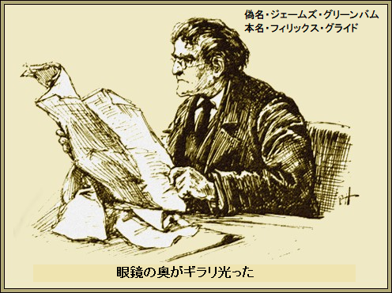

第一章
デイリイ・テレフォン紙の六月十九日最終版が次の記事を報じた。
『ランドストランド共和国がケープ連邦商会に対して行った請求金額が遂に決定した。同国の裁定官は損害を百万ポンドと査定し、向う四週間以内に支払うよう命じた。これがモリソン号撃沈事件の最終章になるか見ものである。南アからの最新情報を信頼すれば、本件は単なる序章に過ぎない』
何千人という英国関係者が朝コーヒーを飲みながらこの記事を読んだけれども、ほかの誰より興味を持って読んだのがジェームズ・グリーンバム氏、有名なケープ商人で、フェンチャーチ通りの自社支店にいた。
グリーンバム氏は英国に長く住んだことはない。ケープの成金億万長者として知られ、この国へ来たのはロンドンに自社の支店を開設するためだった。あとは公然とランドストランド政府を支持しており、あけすけに言えば英国の敵だ。このように大っぴらに反対できるのはこの国だけだし、実際、あおっているようにすらみえる。
大柄で太っちょ、髭を剃りあげたユダヤ人風の顔と、灰色の鋭い目つきの持ち主がグリーンバム。ずる賢い成金の化身だ。まさに衣服で資本家と分かる。このタイプは一目で分かるし、シティのみで見られる。
グリーンバムの眼鏡の奥がギラリ光った。意を決したようにテレフォン紙を脇に置き、支店を出て向かった先は一連の建屋、狭いチープサイド通りにある。この辺りにリーマシュリア商社の事務所があった。

グリーンバムが責任者に面会を求めると、すぐ個室に案内された。細身、満面に笑みをたたえた薄い唇の男が、立ち上がって出迎えた。男は狂信者だとさんざん報じられていた。
これ以上いないというほどの偏屈な大物、かつ、これ以上いないというほどコテコテの小英国主義者が下院のスティーブン・リーマシュリア議員であった。宗教に凝る者がいるかと思えば、
モリソン号撃沈事件で議員の心情はすっかり乱されてしまった。あちこちに金を配って、ランドストランド共和国から荷物ごと英国を撤退させかねない。
かねての反政府活動が熟せば、かの敵共和国に十万ポンドを提供するつもりだ。この覚悟はリーマシュリア議員だけではなかった。ほかにいることをグリーンバムもよく知っていた。
「先生はテレフォン紙をご覧なさいましたか。どうなさるおつもりですか？」
「行動だよ。君のようなランドストランド共和国人なら私の行動が分かるはずだ。あっちで混乱が起こり、我が政府は共和国と戦うつもりらしい。恥知らずも土地を奪うだろう。だがあの賠償金は願ってもない幸運だぞ」
「まだ払われていませんよ」
とグリーンバムがそっけなく言った。
「そうだ。でも確実に入る。問題はだ、すぐかどうかだ。そうじゃないと見た。だから数人で決めたのさ。ランドストランド共和国の正式代理人に百万ポンドを前渡しするけど、賠償金を担保にする。九人がいつでも金を出す覚悟が出来ており、実を言うと、ロンドンのケープ合衆銀行に振り込んだ。十番目の人間を探しておる」
グリーンバムがポケットから小切手帳を取り出して、手形の振出しをさっと書き込んだ。それをこともなげにリーマシュリア議員に渡して言った。
「これで
「軍用に使うことは確かだ。それが
「ライデン侍従は前からベルリンにいません。新聞は全て間違っています。侍従はロンドンです。いや遅くとも明日いらして、数日滞在します。小切手が整い次第、先生にお会いしますよ」
「侍従の住所を教えてくれないか」
とリーマシュリア議員が催促した。
「定宿はありません。ない方がいいのです。侍従は真っ先に先生を訪ねて来ますよ。私とは面識ないので、ハマースミスで
そしてグリーンバムは用件を片付けた。口元に薄笑いを浮かべ、退出しながらつぶやいた。
「俺が専制君主ならあんな男は吊るしてやる。世界でこの国だけだな、罰を受けずに裏切りを自慢できるのは。リーマシュリア先生よ、高い授業料を払うことになるぜ」
この意味はすべて明らかだ。少数の狂信者どもが敵方に軍資金を渡そうとしている。そして敵国の正式代理人ライデン侍従が金を受け取りに来る。同金貨を大陸に運び込み、そこで武器に変える。
当のグリーンバムは支店にまっすぐ帰らなかった。実際、その日は支店にいなかった。その代わり、馬車を呼んでポプラーへ行くよう命じて御者を驚かせた。御者は高額料金を請求し大いに満足した。
ほとんどの人が少なくとも名前を知っているのが、エルズウィック社の有名なポプラー工場だ。ここで外輪駆動の独創的な機械類が製造されている。グリーンバムを今かと待ちうけていた。経営者が面会した。
「どう、進行状況は？」
とグリーンバムが
「ご指示は二つとも実行しました。ご提案の動力船は大成功でした。実用上、振動がありません。時速三十キロが簡単に出ました。その上、一トンか二トンの荷物を運べます」
グリーンバムが満足したと明言。試運転で新型動力船は完璧な性能を証明した。
「では今日、その船をハマースミスまで運航してくれ。おっと、その前に船に乗せてくれないか。面白そうだ」
この小型、優美な蒸気船はグリーンバムが発案したもの。蒸気で船を動かし、油が燃料だ。設計がすばらしいのはたった一人で操船できることだ。
試乗が終わったとき技術者がこう言った。
「注意しなければならないことが一つあります。このような高圧エンジンは常に注意が必要です。蒸気が水銀圧力計で上下します。この圧力点を維持してください。船に半トンのダイナマイト爆発物を積んでいるようなものですから」
グリーンバムがニヤリ。注意すると約束した。
「気をつけなくちゃな。この手の物はおもちゃだ。大抵一人で動かせる。ところでこのおもちゃを今週ハマースミスで使わせてくれ。たぶん土曜日に必要だ。屋根付き船着き場もある」
グリーンバムはポプラーからハマースミスまで直行した。たぶんロンドン新記録かもしれないが、その晩、運賃をたんまりもらって眠りについた御者が一人いた。新記録はいつも嬉しい。
グリーンバムが完全に予想した通り、段取りを入念かつ周到にしてきたので、リーマシュリア議員がこれを知ったら驚くだろうが、ライデン侍従が翌晩、ハマースミスへやってきた。ちょうど夕食時間に到着した。
興奮している風もなく、挨拶もなかった。やせ形の頑丈そうな男で、眼がきょろきょろと鋭い。男の特徴は精悍そのもの。グリーンバムが夕食しているとき来た。ライデン侍従が表向き冷静に握手して、挨拶した。
「大変待たせたな」
「本当に楽しみにしておりました。侍従はリーマシュリア議員の所へ行かれ、伝言を聞かれたと思います。ホテルに泊まるよりここの方がずっと快適ですよ」
ライデン侍従は事務的にテーブルの椅子を引いた。火薬庫の上でも平気で食事しかねない男だ。食台をずいと見渡して満足を押し殺した。常識人なら、まずい夕食よりうまい夕食を好むものだ。
グリーンバムが勧めた。
「
「ああ。百万ポンド小切手を持っておる。イギリスに友人がこんなにいるとは思わなかったな」
グリーンバムが平然と言い放った。
「リーマシュリア議員は狂信者のバカ者ですよ。それに事業に博愛なんてこれぽっちもありません。投機に利用するだけです。各人十万ポンドですが、安いものですよ」
ライデン侍従の目がギラリと光り、
「我が方が負けるとお考えか。キミの考えではランドストランド共和国がイギリス領になるとでも？」
「私もあなたと同じ共和国の愛国者ですよ。ご予定は？」
「計画はいたって単純だ。あした午後、ロンドンにいる秘書のアーンストと金を受け取るつもりだ。税関には申告せず、クィンズバラからロッテルダムへ船積みする。ベルギーに着いたら、軍用品に変える。ベルリンへ行くかもな」
グリーンバムがさえぎって、
「その必要はありませんよ。現在、皇帝はお忍びでブリュッセルにご滞在です」
ライデン侍従が驚いた。くだんの皇帝がランドストランド共和国側に強く共鳴されていることをよく知っていた。そしてグリーンバムが微に入り細にわたり説明したのは、あらゆる疑惑をすっかり吹き飛ばすほどの内容だった。
グリーンバムが切り出した。
「何か驚くべきことが起こっています。私には特定できません。でもこれだけは言えます。皇帝が侍従のあなたを呼ばれたらいつでも、すぐ行かなければなりません。今頃、皇帝はあなたの居場所をよくご存知のはずです」
これ以上グリーンバムは言わなかった。実際、それ以上の
「皇帝は控えめに言えば気まぐれだ。頭は切れるが、気まぐれが怖い。後生だから、金を無事に受け取るまで
とライデン侍従がぼやいた。
グリーンバムが椅子から立ちあがって、言った。
「さて、もうこの話はよしましょう。ワインはたっぷり召し上がったので、
「実を言うとうまい煙草に目が無いんだ」
とライデン侍従がにっこり。
グリーンバムが壁の食器棚を開き、大ぶりの木箱を取りだした。取り出すとき、食器棚で何か、ガチャガチャ、ゴトゴト音がした。青地に金色の
ライデン侍従がグリーンバムを
「君は軍人だったのか」
「昔はいろんなことをやりましたが、長続きしませんでした。でも全くやったことが無いのもありますよ」
「それは何だ」
グリーンバムの目が
「当ててごらんなさい。今までやろうと思ったことはありませんがね」
第二章
翌朝、ライデン侍従は朝食後、忙しかった。面白いものが二、三あり、なかでも目を引いたのが新型蒸気船だった。
あちこち旅した者として、大いに気に入った。ちょっと妙だったのはグリーンバムがこの蒸気船について何も言わなかったことだ。
庭の端っこにある屋根付き船着き場に、整備され、係留してある。グリーンバムは侍従を蒸気船に夢中にさせておいた。
「ごゆっくり滞在なさい。私はシティへ行かねばなりません。夕方、会って
そのまま、グリーンバムは家に戻った。一分後、道の向こうの玄関からライデン侍従を呼んだ。
「お客様がお見えです。すぐいらしてください」
ライデン侍従は応接室に大急ぎで戻った。その直前、グリーンバムは食堂に侵入。突進した食器棚は前夜、煙草を出した棚だ。
腕や足をパッパッと光のように動かし、あっという間もなく、変装した姿は軍人、単眼鏡をかけ、
グリーンバムが文字通り食器棚の所に飛び込み、引き出しを開け、自動ばねで閉め、離れの応接室に戻ると、そのあとライデン侍従が応接室に入ってきた。フレゴリすらこんなにうまくできないだろう。
武官が偉そうに言った。
「君がライデン侍従か。私はアンドレ伯爵だ」
「皇帝の個人秘書で？」
「さよう。ブリュッセルから来た。ブリュッセルだぞ。君に会うため大急ぎだ。皇帝の手紙を持ってきた。ありがたく、これを読んで、直ちに指示に従いたまえ」
手紙を台上に差し出した。ライデン侍従が皇帝の署名を確認。封の中に手紙があり、一行か、二行したためられた緊急用件は、直ちに指定の場所へ行けというライデン侍従への命令だった。
「さあて、それで？」
と武官が尊大に
「従いますよ。まず秘書に会わなくては。何はさておき、厄介なことになった。もしよろしければ……」
だが、アンドレ伯爵はもういなかった。実際、そこにおらず二階に上がっていた。
＊
一、二分して、正装したグリーンバムが悠々と玄関に入ってきて、無造作に
「侍従、もうお客様はお帰りですか」
ライデン侍従は不満たらたらだ。
「あいつは礼儀作法を教わったのに相変わらずだなあ。皇帝が私にすぐ会いたがっておられる」
「おや、では、やはりブリュッセルに
ライデン侍従が
「数日留守にするが、その間に、君、銀行から金を引き出して、どこか安全なところに隠さねば」
グリーンバムが眉を寄せて考え込み、顔を輝かせ、
「解決方法があります。秘書に会わせてください、絶対信頼できると
「でも大量の金貨を運ぶには荷馬車の隊列が要るだろ」
「普通ならそうかもしれません。でもそういうことなら、私の蒸気船が立派に役立ちますよ。とにかく金をそのままにしておくのは愚かです。金庫をご覧になりますか」
ライデン侍従が希望した。廊下の先端でグリーンバムが扉を開くと、本物の金庫部屋があった。暗いが、換気は完璧なようだ。グリーンバムが電灯をつけた。ちょっと誇らしげに言った。
「ここですよ。どうです？」
ライデン侍従がグリーンバムの熱心さに感じ入った。
「すごい。これ以上いいのはない。君、解決だ。急いで町へ戻って秘書のアーンストに会う。午後二時までに君の支店で全部準備してくれ。いろいろ親切にありがとう」
グリーンバムはライデン侍従が無事
＊
午後二時ちょっとすぎ、秘書のアーンストが到着した。グリーンバムはその素晴らしい筋肉と体格をほれぼれ眺めて言った。
「よく来てくれた。準備がよければ銀行へ行こう。キミは差し当たり私の顧客だ。キミは大男だから、私が百万ポンド持ち逃げできないことが分ろう」
取引が遂に行われた。重たい箱を蒸気船に運び込んだ。かさばったが、小型蒸気船はびくともしなかった。それから蒸気船をハマースミスへ
グリーンバムが語った。
「今日の午後は休むつもりだ。金庫へ入れるのを誰かに手伝わせろ。入れたら、取り出すまでキミに鍵を預けよう」
運搬は相当時間がかかったが、やっと完了して、全部の箱を金庫の一角に積み上げた。アーンストが大声でほめちぎったのは金庫部屋がこぢんまりで頑丈なこと。
「キミ、中の全てを見てないぞ。見ろ」
こうグリーンバムが言って扉を引いて、食器棚を開けた。中には食器やグラスや栓抜きや缶切りや、大量の食糧が入れてあった。その上、ワインや蒸留酒も大量にあった。
「どういうことだ」
とアーンストが驚いて尋ねた。
「俺のこだわりだよ。むかしこの金庫に丸一日閉じ込められたことがある。それから怖くなったんだ。いいか、この扉はそこのバネで閉まる、おっと心配ない、鍵を持ってるから。あの食パンは万が一のことを考えて今朝入れた。扉の下の板を引いてみろ」
アーンストが好奇心から床をまたいだ。その時、グリーンバムは山と積まれた金塊箱の横に立ち、天井のボッチを押した。
ガタン、ゴロゴロと音がして、床半分が横へさっと動き、お宝とグリーンバムを別部屋へ押し出し、また閉まり、アーンストが振り向く暇もなく出口がピタリ
アーンストが驚いて目をこすった。完全に取り残された。まるで悪夢だ。たちどころに捕われたことが分かった。食器棚が戸裏になり、メモがポツンと囚人当てに貼ってある。
『キミはここに二、三日閉じ込められる。声を出しても役にも立たない。誰にも聞こえないからだ。食糧はたっぷりある。後日、金庫のカギを釈明手紙と一緒にライデン侍従へ渡す。食器棚の瓶の後ろに文学全集がたくさんある』
アーンストが激怒してメモを床にたたきつけた。
「はめやがって、だましやがって。侍従に何と言われるか」
＊
一方、偽のグリーンバム、別名フィリックス・グライドはちっとも暇じゃなかった。計画はすべて完璧に細部まで行う。ここで邪魔する者はいない。口実を設けて事務員に暇を取らせた。理由など今日以降必要ない。
あの巧妙な金庫はこの為に作ったし、全ての段取りはランドストランド共和国の百万ポンドが決まってすぐ練り上げた。グライドは斜面に乗って金庫から脱出し、この斜面を使って、用意した手押し車に金塊箱を乗せ、一個ずつ蒸気船に積んだ。
高価な荷を積み、グライドがその横にたった一人乗り、小型船は矢のように川を下った。一時間後、待ちうけていたヨットのそばにピタリ停泊した。狭いエンジン室から現れた男は全然グライドではなく、油まみれの機関士だった。でもやっぱりグライドだった。荒っぽく言った。

「おい、ここだ。親分の機械を持ってきたぞ。ポイント港にしけ込み、そこで親分を待て。午後五時に取りに来る予定だ」
金塊、いやグライドが言う機械類を、オスプレイ号の脇に放り投げ、乱暴に船倉へ放り込んだ。それからグライドは反転し、川を上った。このとき変装を解いた。当面グリーンバムに戻った。辺りに住む船上生活者が成金を見ていた。
グライドの目が星のようにキラリ。階段を下りて、むっとするエンジン室へはいった。蒸気圧力が異常に高い。異常高圧やら技師の注意にもかかわらず、火力を強めた。この男の神経は
ぐずぐずしちゃおれん、とつぶやいた。
「船はどこへでも行け。俺は……」
とつぶやいた。
ドカーン。何千ものハンマーで叩いたような爆発音と、シューと鳴くような蒸気音がした。それから、見えざる強大な力で引き裂かれたかのように、蒸気船が破裂し、
「派手な沈没だぜ」
とグライドがニヤリ。
しばらく見ていると、二十
そのあと無人の支店に帰った。ややあって、陽気で如才ない典型的なアメリカ人が流しの馬車を大声で呼び止めた。
「おーい、ポイント港まで乗せてくれ。そこで俺のヨットが待っている。満潮を逃したくない」
ポイント港に着くと、バーバー大佐がオスプレイ号に乗りこんで、あのテムズ川惨事がフリート通りに広まらないうちに、満潮に乗じてヨットを出港させた。グライドが高価な荷物を詮索されることはなかった。
＊
晴れた星明かり、穏やかでさわやかな夜、グライドはセント・マロに停泊し、船室にゆったりと腰かけ、モリソン号賠償金のいきさつを読んでいた。
あの小事故から二週間が経った。その間、ガンター大佐なる人物が、あちこちの港で、機械部品をほとんど手放した。
簡単な記事がスター新聞に出た。
『驚愕 すべき話が発覚したので発行する。モリソン号賠償金がらみだが現在、詳細は不明。仄聞 するところ、確かに驚天動地 だ。百万ポンドが盗まれ、ランドストランド共和国の有能な秘書が、からくり金庫に閉じ込められた。詐欺全体を計画したのが大富豪、その名はグリーンバムにほかならない。あげくの果てに金貨も、偽の大富豪も消えてしまい、紛れもなく蒸気船が爆発して死んだ。さらなる詳細が期待される。秘書のアーンストは釈放以来それほど口が堅くないからだ。我社は真相解明をいとわない』
グライドが
「労苦を惜しむとは思わないが、成功しないさ。絶対、真相は分かりっこない」
と独り言。
現在までこの予言は文字通り保たれたままである。
スター新聞の特ダネはいまだない。
了